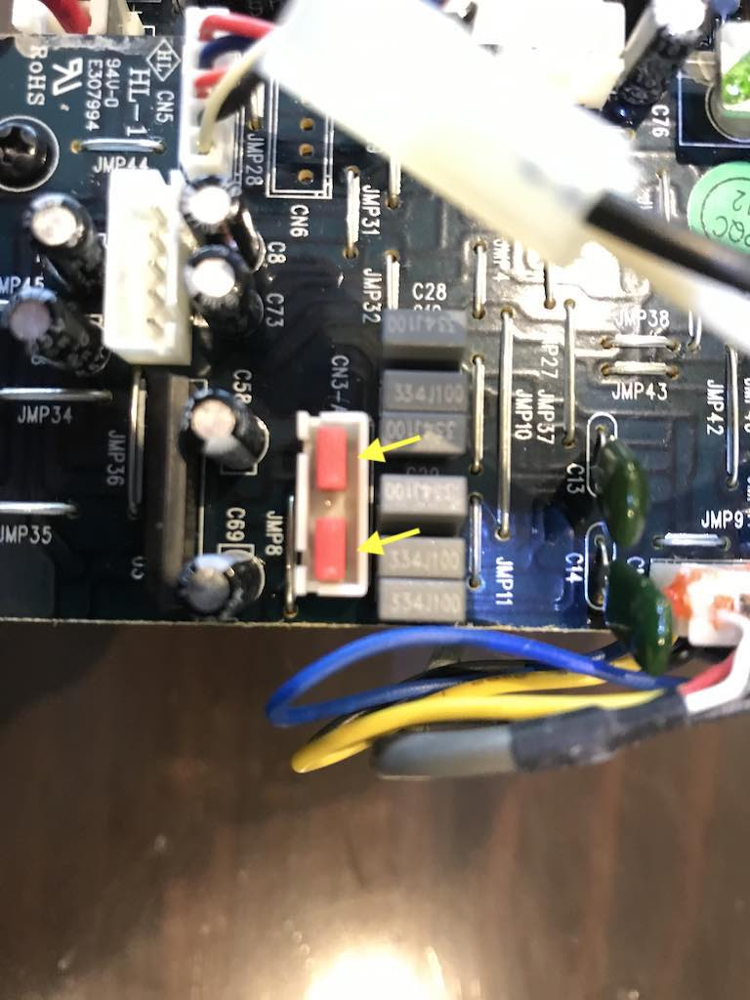

These active speakers had developed a fault where the right speaker was not working.
Apparently this is a common fault most likely due to a problematic headphone jack which affects the BT3, BT4, and BT5 models.
Sometimes inserting a plug in/out of the jack or cleaning it fixes the problem, however I found that after a while, even this didn't help.
This page describes a method to bypass the headphone jack so both speakers work again, however the headphone jack will no longer work.
A proper fix would replace the headphone jack, however unfortunately it is glued into the case so I didn't think it was worth demolishing the case to do this.
Thanks to this Gearspace post for the idea.
First remove the outer screws from the back of the right speaker and wiggle out the main board.
Take note (e.g. by taking a photo) of how the cables are plugged into the main board, and then unplug the cables to free the main board from the case.
On the main board, locate connector CN3-A which the headphone jack cables were plugged into. To implement this fix, you'll want to short the 2 upper pins to each other and the 2 lower pins to each other, leaving the middle pin.
Here's a close-up of CN3-A.

In order to short the pins, I used old motherboard jumper caps as shown. These jumper caps just connect 2 pins together; they're often black but mine are red.
Here's a closeup of the jumper caps.
Now plug in all the cables (except for the headphone jack cables connector) and screw the unit back together again.